Upper Extremity Blocks
Contents
Upper Extremity Blocks#
Brachial Plexus & Nerve Block Locations
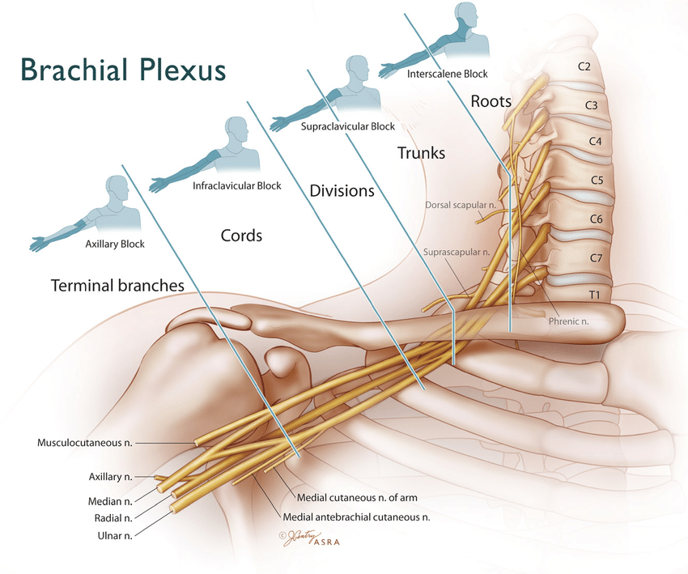
https://aneskey.com/brachial-plexus-block/
Interscalene (ISB)#
Better shoulder coverage than Supraclavicular because reliably blocks above suprascapular nerve take-off.
Often misses ulnar distribution
100% chance of Phrenic Nerve (C3,4,5). Transient Hemidiaphragmatic Paralysis.
Difficult to place catheter. Shallow, no muscle/ligament to anchor catheter.
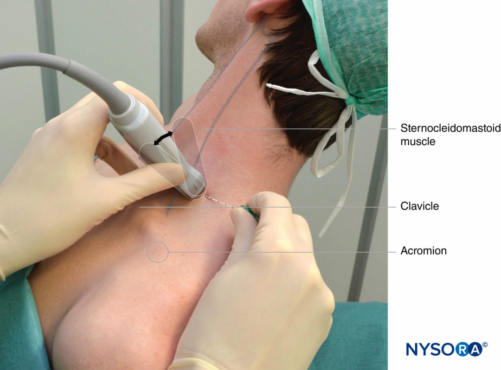

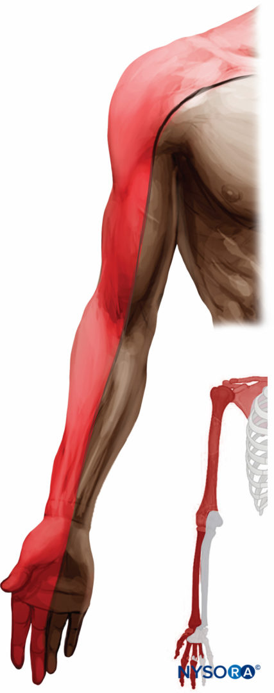
Supraclavicular#
“Spinal of the Arm”. Commonly used for primary regional anesthetic in hand room cases.
Low pneumothorax risk. Needle protected by 1st rib.
~67% chance of Phrenic Nerve involvement
Difficult to place catheter. Shallow, no muscle/ligament to anchor catheter.
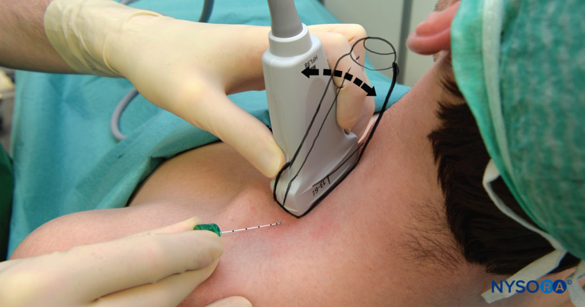
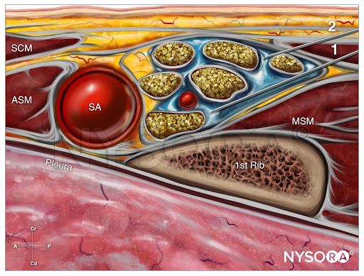
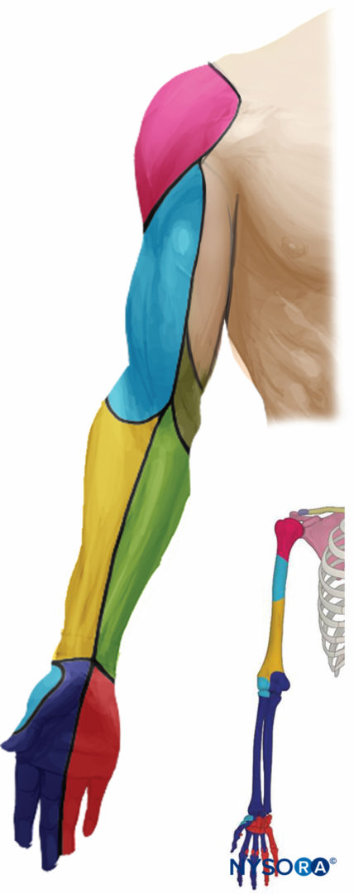
Infraclavicular#
Similar coverage to Supraclavicular, little less reliable to get shoulder
Better for catheters. Pectoral muscle anchors catheter
Deep structure, steep needle angulation, difficult needle visualization
Higher pneumothorax risk. No bony protection against needle.
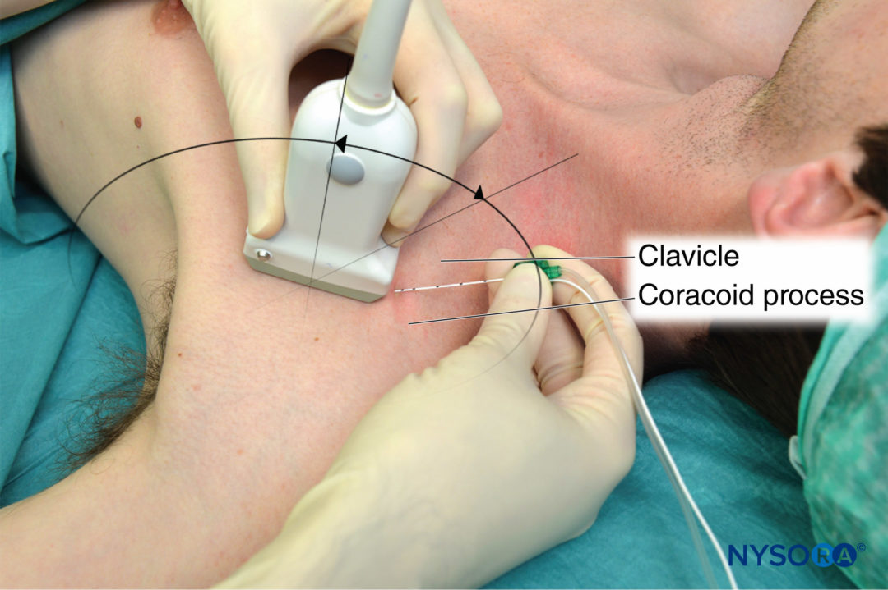
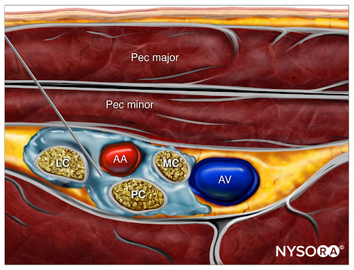
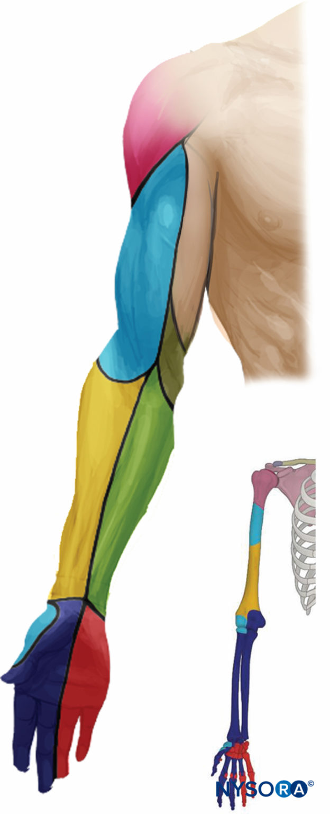
Axillary#
Requires arm up positioning
No shoulder coverage
More targets. Nerves have branched out. Need to get around axillary artery for Radial/Ulnar/Median & separately get musculocutaneous.
Alternative to other brachial plexus blocks for anticoagulated patients as axillary region is compressible
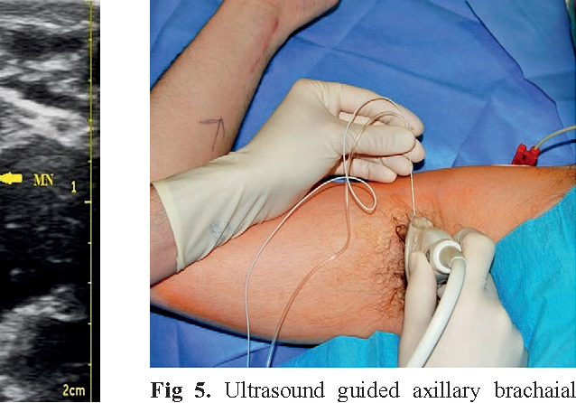
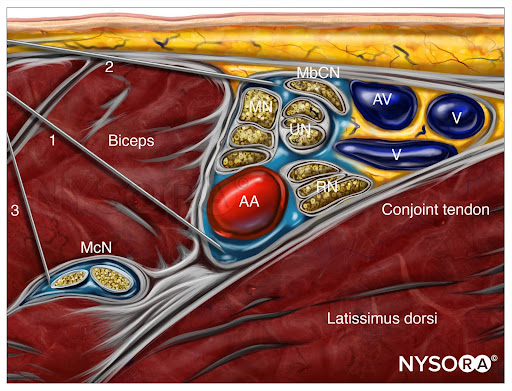
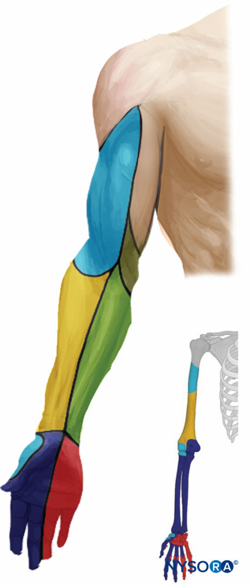
Getting the T2 Dermatomal Distribution#
Intercostobrachial (ICB)#
Branch of T2. Not part of brachial plexus.
Often needed for tourniquet or AV fistula.
Anesthetize small subcutaneous nerves
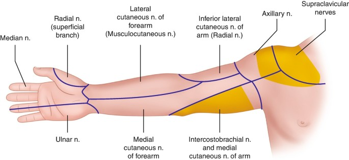
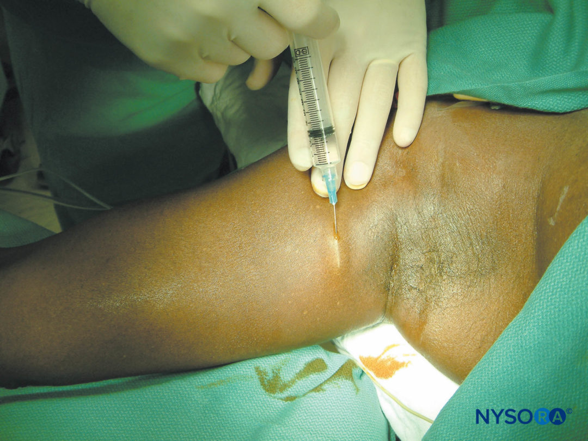
Pectoralis (Pecs I/II)#
Fascial plane block
Covers axillary/shoulder nerves not innervated by brachial plexus
Proximal inner arm (T2/intercostobrachial distribution)
Axilla
Posterior Shoulder
Note: similar location to Serratus Anterior blocks, which is more lateral and in the axillary line
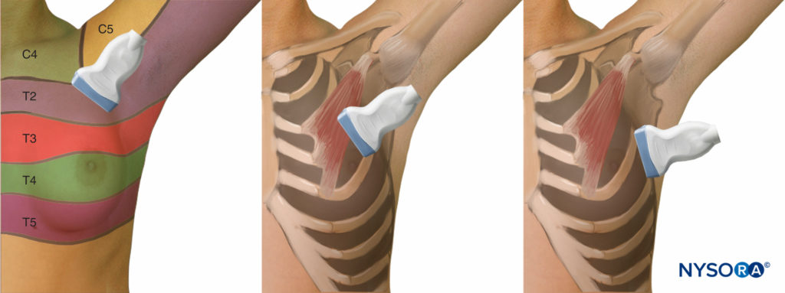
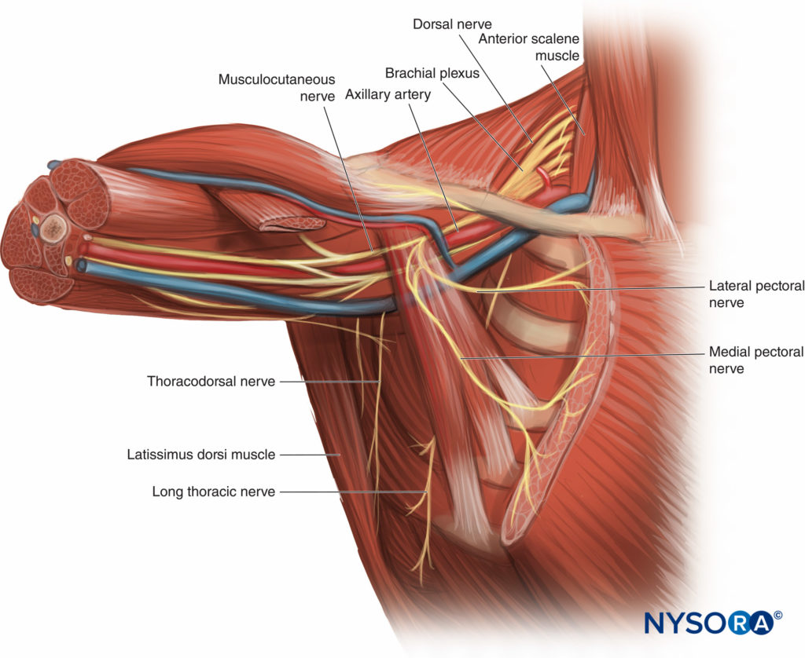
Pecs 1 & pecs 2 block injection sites.
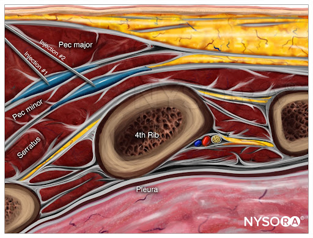
Sources#
Most of resources/images taken from NYSORA which is a good site for learning/review. https://www.nysora.com/techniques/upper-extremity/